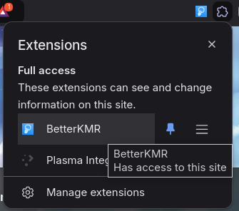
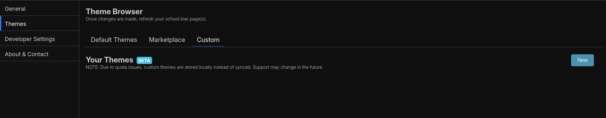
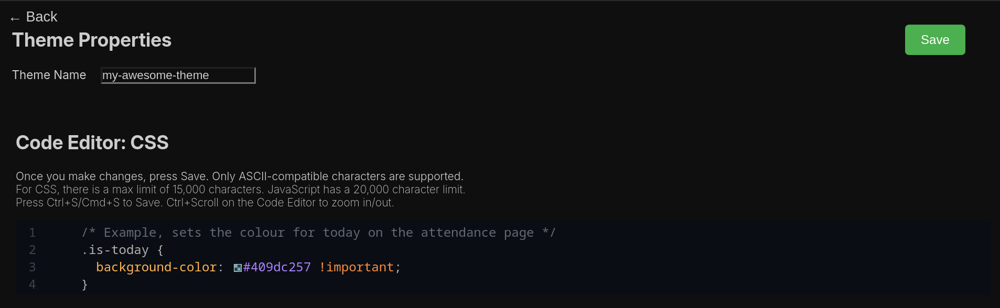
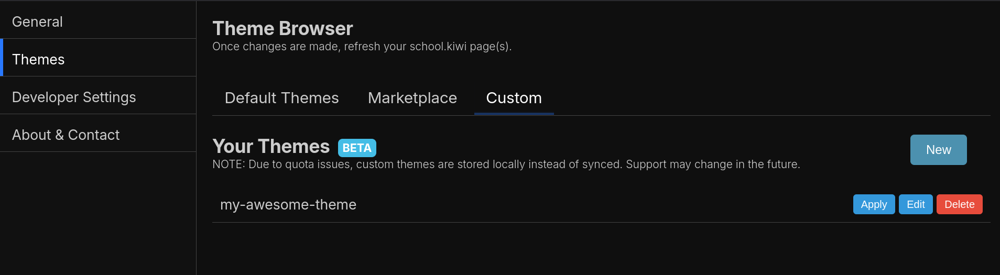
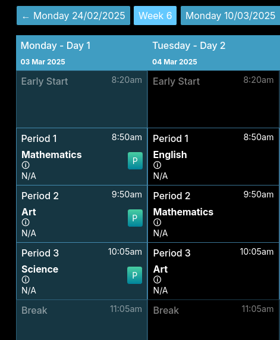
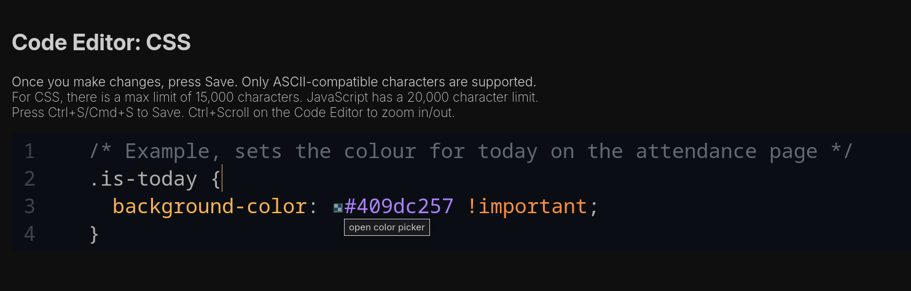
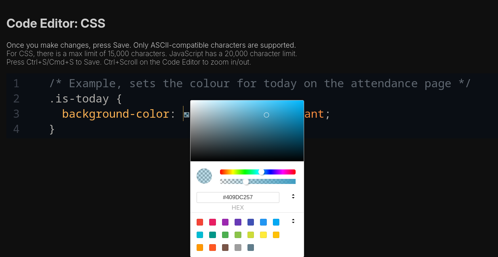

🏄 Creating Custom Themes
With the release of v1.0, creating custom themes are now entirely possible (in beta)! In this guide, you'll be directed step-by-step on how to make brilliant themes.
First, click on the extension to open Settings. You can also click "BetterKMR Menu" in the "My Account" part of the navigation bar on your school's Kamar website.
 |
|---|
| The BetterKMR extension, pinned to the URL bar. Also available through the "Extensions" button. |
From there, on the sidebar, click on the "Themes" tab and then click on the sub-tab "Custom". You'll be greeted with something that looks like this:
 |
|---|
| The "Custom" sub-tab on the Themes tab. |
By default (from a fresh install), you shouldn't have a list of your created themes yet (as image above). We'll need to start creating our theme, so go ahead and click on "New". This opens up a somewhat intimidating window, where we have to input our theme name (call it anything you'd like, as long as it's reasonable).
 |
|---|
| The "code editor" as of v1.0. The code editor may look different depending on what version you're on. |
First of all, without doing anything else other than setting a name, you can click on Save. This will save your theme for you to use.
Note: You can use Ctrl+S (Windows/Linux/ChromeOS) or Cmd+S on Mac to save without pressing the button. Also, you can use Ctrl+Scroll on the Code Editor to zoom in/out.
Click on the Back button, and head back over to Themes -> Custom. You should find your theme here!
 |
|---|
| Our theme "my-awesome-theme" listed here in the themes we've made. |
First off, the thing we should do is click Apply. This makes it so our theme is on our school's Kamar page now. Refresh or open a Kamar page, assuming you're logged in, then head over to Attendance.
 |
|---|
| The current day highlighted as a light blue. Image is for example purposes only. |
Notice how today is highlighted a light blue colour? This is because of our custom theme we made — it sets today's background colour to light blue. So, how do we change it?
Head on back over to Themes -> Custom. You'll notice the "Edit" button next to Apply. Click that and you'll head straight back to the Code Editor.
 |
|---|
| Hovering over a "square" in the Code Editor, next to a hashtag, which is our colour. |
As shown above, the code seems somewhat self explanatory. It finds the day today, on the attendance, and sets the background colour to #409dc257. This strange bit of text looks odd, but it really is just light blue with a little bit of see-through transparency.
To change the colour, all we have to do is change the #409dc257 to a different colour. For example, if we wanted to change it to red, we'd change it to #c2404057.
 |
|---|
| Hovering over a "square" in the Code Editor, next to a hashtag, which is our colour. |
But, however, fear not! There should be a little square next to the hashtag. Click on it and you'll see something that looks like the image above. You can play around with the colour picker to find the perfect colour for you! By the way, the hashtag with a bunch of numbers and letters is called a hex code. It's a way of representing colours in code. You can use the color picker to find the hex code of any colour you want.
Once you're happy with the colour, click on the "Apply" button. This will save your changes and apply them to your school's Kamar page. Refresh or open a Kamar page, assuming you're logged in, then head over to Attendance. You can do this as many times as you like, switching tabs between the Code Editor and your school's Kamar page. Depending on what version you're on, you may be able to create as many themes as you like.
If you want to modify more than just "today's date background colour", I recommend diving into CSS and using the Inspector. A good video can be found here: Using inspect element for CSS styles. You can take inspiration from the default themes, or even use the default themes as a base to make your own! Check out the Discord server if you need help.